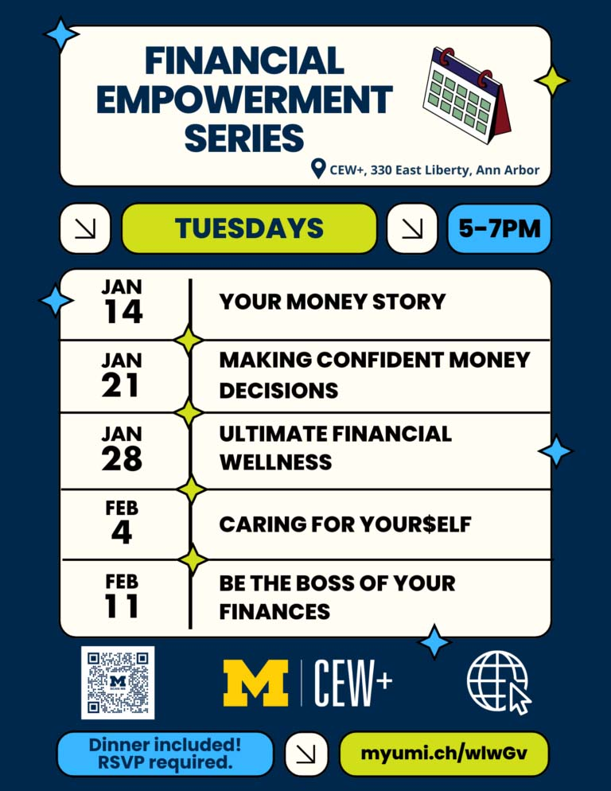

Scholarships and Fellowships
CEW+ offers financial support to help students overcome barriers to their education through scholarships and fellowships tailored to nontraditional students.

CEW+ empowers individuals at the University of Michigan and beyond by providing resources, advocacy, and a supportive community. Their mission focuses on supporting women and underserved communities, fostering gender equity, and addressing intersectional challenges in education and professional life.
CEW+ offers financial support to help students overcome barriers to their education through scholarships and fellowships tailored to nontraditional students.

One-on-one sessions provide personalized support to navigate academic and career challenges, as well as life transitions.
CEW+ hosts workshops and events that focus on personal development, leadership, and addressing the unique needs of their community.